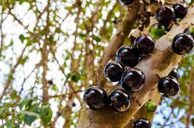
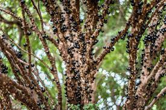

Objetivos
Nesse site você encontrará diversas informações sobre a jabuticabeira, uma planta de médio porte nativa da Mata Atlântica, tendo como nome originário ïapotï’kaba que significa "frutas em botão".
Podendo chegar até 9 metros de altura, a jabuticabeira pode levar entre 10 e 15 anos para frutificar, além de poder ser cultivada em pomares, quintais, e até mesmo em vasos, como planta ornamental.

